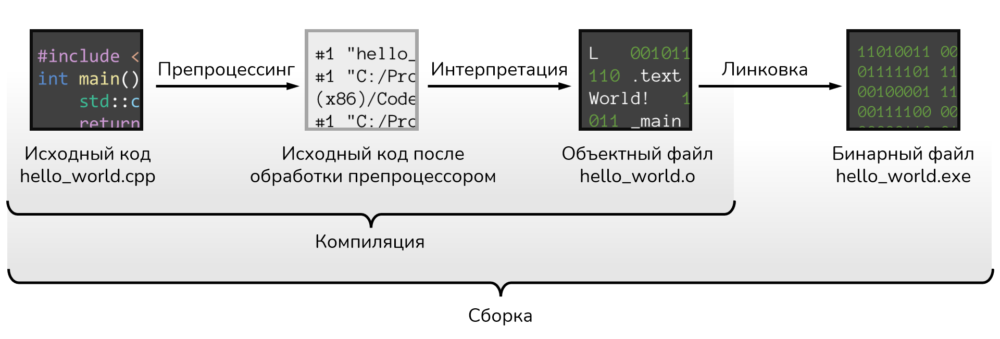

Компьютерная программа — это последовательность инструкций, которые сообщают компьютеру,
что ему нужно сделать.
Компьютер может исполнять только машинный код — набор простейших низкоуровневых инструкций,
состоящий из нулей и единиц.
11010011 00101100 00000111 00010100 01111101 11110011 10100001 11011111
01111101 11110011 10100001 11010111 00011100 10101000 01111101 11110011
00100001 11111000 01000010 01100001 01111101 11110011 10100001 11011111
00111100 00101011 00011100 10101000 01111101 11110011 10100001 11011111
И для удобства разработки кода, который компьютеры смогут выполнять, существуют языки
программирования разных уровней.
⬥ Высокоуровневые языки
⬥ Среднеуровневые языки
⬥ Низкоуровневые языки
С++ — язык программирования среднего уровня, т.к. сочетает в себе функции
как высокого, так и низкого уровня.

После препроцессинга отдельного файла не создаётся.
Компьютерная программа — это последовательность инструкций, которые сообщают компьютеру,
что ему нужно сделать.
Выражение — это комбинация литералов, переменных, функций и операторов, которая генерирует
определенное значение.
Литерал — это фиксированное значение, которое записывается
непосредственно в исходном коде. Литералы, переменные и функции еще известны как операнды.
Операнды — это данные, с которыми работает выражение.
Комментарий — это часть кода, игнорируемая компилятором.
Операторы сообщают компилятору о необходимости выполнения
какого-либо математического (с использованием операндов) или логического действия.
Стейтмент — это наименьшая инструкция (независимая единица кода), выполняющая
одно/несколько действий. Стейтменты всегда заканчиваются терминатором ;
Объект — это часть памяти, которая может хранить значение.
Переменная — это объект с именем, которых хранит значение l-value.
Идентификатор — это имя объекта.
Функция — это последовательность стейтментов, объединённых блоком, или одного
стейтмента, возвращающее некое значение.
Вызов функции — это выражение, указывающее процессору прервать выполнение текущей
функции и приступить к выполнению вызываемой функции.
Библиотека — это набор скомпилированного кода (например, функций), который
был «упакован» для повторного использования в других программах.
Пример №1: HelloWorld
#include <iostream>
using namespace std;
int
main() { // Вызов функции
cout << "Hello, World!";
return 0;
}
Коментарии
Стейтменты, блоки стейтментов
Директивы препроцессора
Литералы
Типы данных
Переменные, ссылки, указатели
Функции
Классы
Циклы
Пространства имён
Перечисления
Структуры
Потоки
Annnnenkdsanbcnkxlmax.,z cmnbAnnnnenkdsanbcnkxlmax.,z cmnbAnnnnenkdsanbcnkxlmax.,z cmnbAnnnnenkdsanbcnkxlmax.,z cmnbAnnnnenkdsanbcnkxlmax.,z cmnbAnnnnenkdsanbcnkxlmax.,z cmnbAnnnnenkdsanbcnkxlmax.,z cmnbAnnnnenkdsanbcnkxlmax., z cmnbAnnnnenkdsanbcnkxlmax.,z cmnbAnnnnenkdsanbcnkxlmax.,z cmnbAnnnnenkdsanbcnkxlmax.,z cmnbAnnnnenkdsanbcnkxlmax.,z cmnbAnnnnenkdsanbcnkxlmax.,z cmnbAnnnnenkdsanbcnkxlmax.,z cmnbAnnnnenkdsanbcnkxlmax.,z cmnbAnnnnenkdsanbcnkxlmax.,z cmnbAnnnnenkdsanbcnkxlmax.,z cmnbAnnnnenkdsanbcnkxlmax.,z cmnbAnnnnenkdsanbcnkxlmax.,z cmnbAnnnnenkdsanbcnkxlmax., z cmnbAnnnnenkdsanbcnkxlmax.,z cmnbAnnnnenkdsanbcnkxlmax.,z cmnbAnnnnenkdsanbcnkxlmax.,z cmnbAnnnnenkdsanbcnkxlmax.,z cmnbAnnnnenkdsanbcnkxlmax.,z cmnbAnnnnenkdsanbcnkxlmax.,z cmnbAnnnnenkdsanbcnkxlmax.,z cmnbAnnnnenkdsanbcnkxlmax.,z cmnbAnnnnenkdsanbcnkxlmax.,z cmnbAnnnnenkdsanbcnkxlmax.,z cmnb